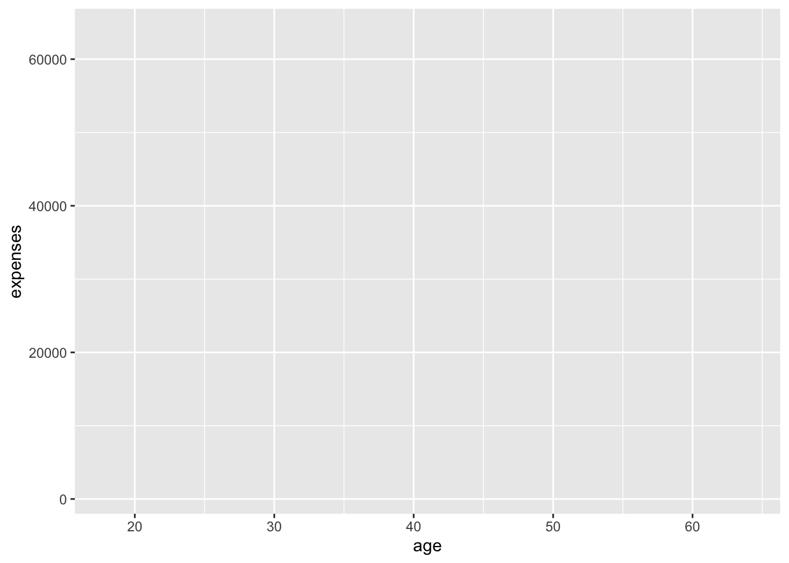
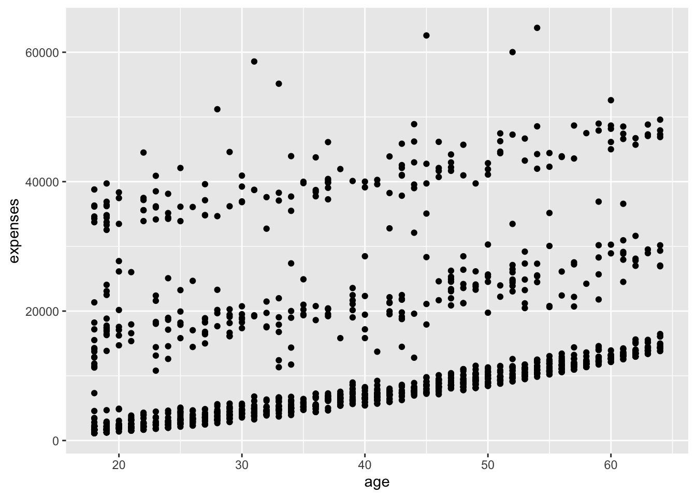
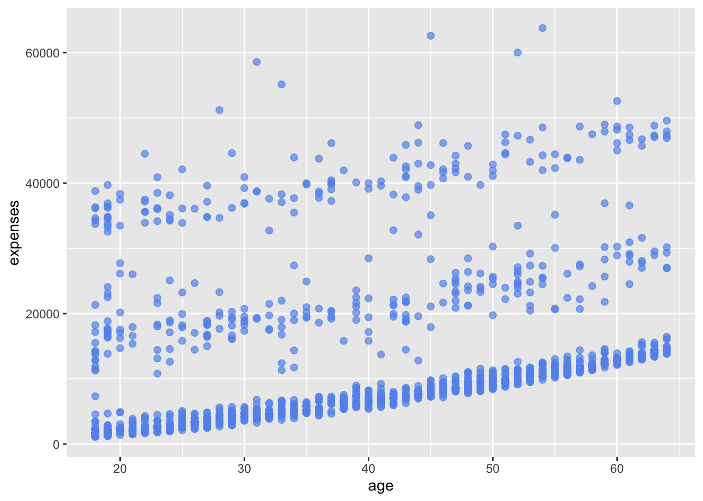
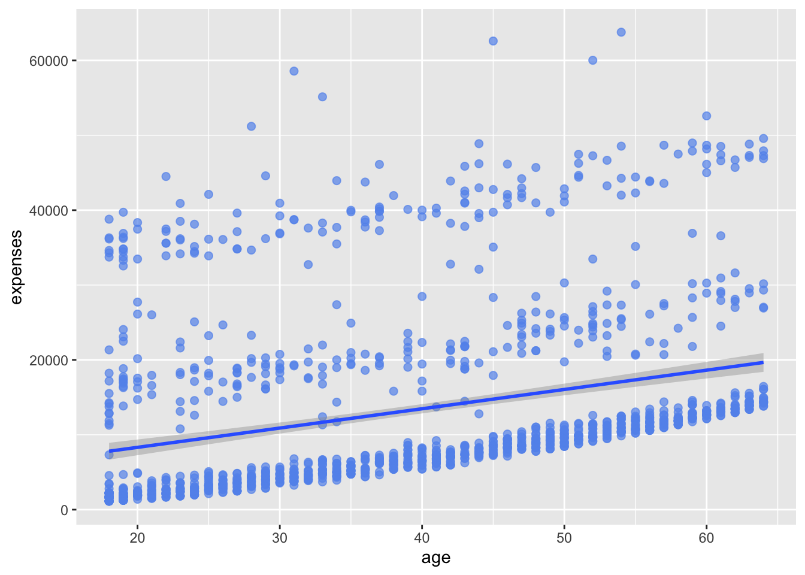
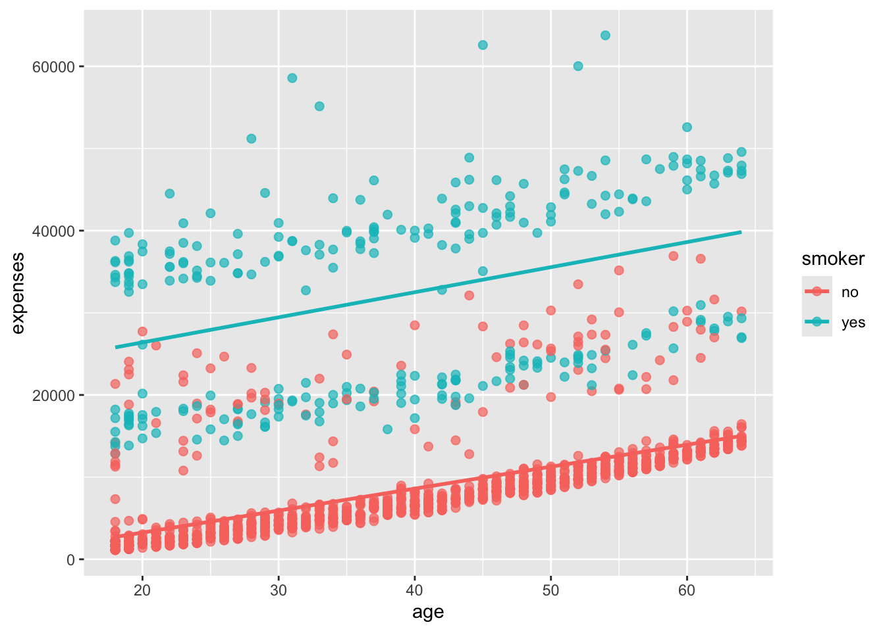
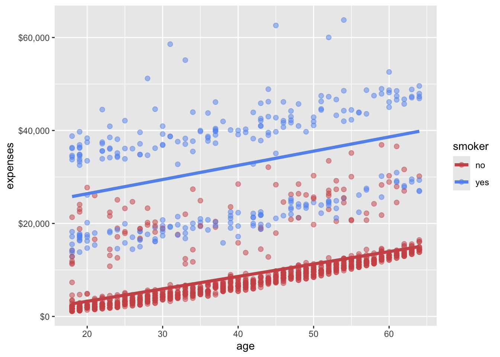
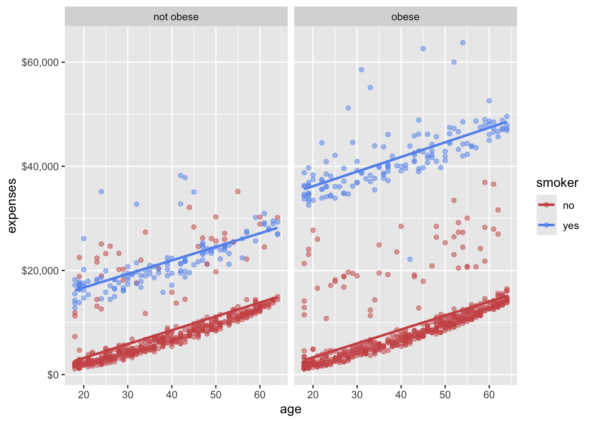
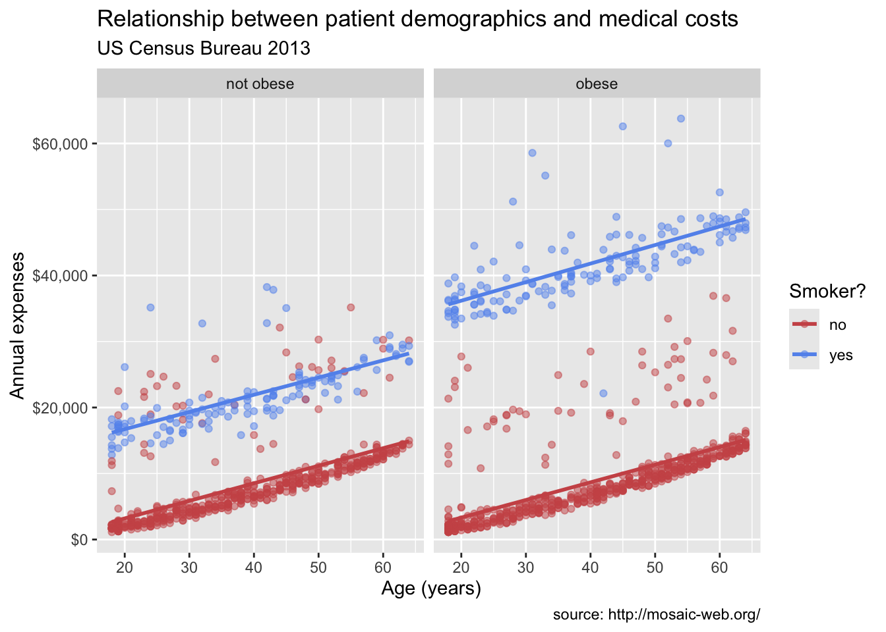
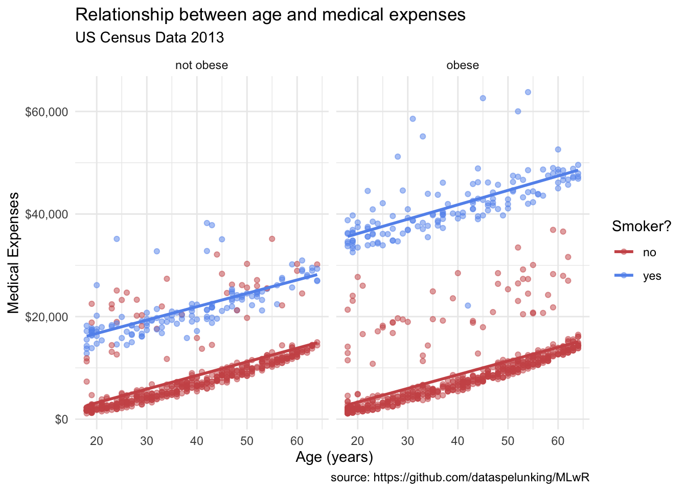

install.packages("ggplot2")
14 Exploring data with ggplot2
This chapter is based on the Intro to ggplot2 chapter from the book Modern Data Visualization with R by Robert Kabacoff, which is licensed under the Creative Commons Attribution-NonCommercial 4.0 International License. The original chapter has been modified to fit the context of this book.
The insurance dataset is described in the book Machine Learning with R by Brett Lantz. A cleaned version of the dataset is also available on Kaggle. The dataset describes medical information and costs billed by health insurance companies in 2013, as compiled by the United States Census Bureau. Variables include age, sex, body mass index, number of children covered by health insurance, smoker status, US region, and individual medical costs billed by health insurance for 1338 individuals.
In this chapter, we will explore the dataset using ggplot2, a powerful visualization package in R.
To get started, we need to install and load the ggplot2 package. If you haven’t installed it yet, you can do so using the following command:
Once installed, load the package:
Next, we will read the insurance dataset into R. We’ll use a convenient online version of the dataset and use the read.csv function to load it:
# load the data
url <- "https://tinyurl.com/mtktm8e5"
insurance <- read.csv(url)In Rstudio, you can use the View() function to inspect the dataset:
# view the dataset
View(insurance)Next, we’ll add a variable indicating if the patient is obese or not. Obesity will be defined as a body mass index greater than or equal to 30.
# create an obesity variable
insurance$obese <- ifelse(insurance$bmi >= 30,
"obese", "not obese")In building a ggplot2 graph, only the first two functions described below are required. The others are optional and can appear in any order.
14.1 ggplot()
The ggplot() function initializes the plot. It takes a data frame as its first argument and can also include aesthetic mappings (aes) that define how variables in the data are mapped to visual properties of the plot, such as x and y axes, color, size, etc.

Why is Figure 14.1 not showing a plot? Because we have not added any layers to the plot yet. The ggplot() function only initializes the plot; it does not display anything until we add layers. We specified that the age variable should be mapped to the x-axis and that the expenses should be mapped to the y-axis, but we haven’t yet specified what we wanted placed on the graph.
14.2 geom_*()
The geom_*() functions add layers to the plot. Each geom_*() function corresponds to a specific type of geometric object, such as points, lines, bars, etc. For example, geom_point() adds points to the plot, while geom_line() adds lines.
# add points to the plot
ggplot(data = insurance,
mapping = aes(x = age, y = expenses)) +
geom_point()

In Figure 14.2, we added points to the plot using geom_point(). The + operator is used to add layers to the plot. The mapping argument in aes() specifies how variables in the data are mapped to visual properties of the plot.
We can see in Figure 14.2 that insurance expenses increase with age, but there is a lot of variability in the data.
A number of parameters (options) can be specified in a geom_ function. Options for the geom_point function include color, size, and alpha. These control the point color, size, and transparency, respectively. Transparency ranges from 0 (completely transparent) to 1 (completely opaque). Adding a degree of transparency can help visualize overlapping points.
# make points blue, larger, and semi-transparent
ggplot(data = insurance,
mapping = aes(x = age, y = expenses)) +
geom_point(color = "cornflowerblue",
alpha = .7,
size = 2)

Next, we can add a line of best fit; in essence, we will layer on a regression fit. We can do this with the geom_smooth function. Options control the type of line (linear, quadratic, nonparametric), the thickness of the line, the line’s color, and the presence or absence of a confidence interval. Here we request a linear regression (method = lm) line (where lm stands for linear model).
# add a line of best fit
ggplot(data = insurance,
mapping = aes(x = age, y = expenses)) +
geom_point(color = "cornflowerblue",
alpha = .7,
size = 2) +
geom_smooth(method = "lm")`geom_smooth()` using formula = 'y ~ x'

In Figure 14.4, we added a line of best fit using geom_smooth(method = "lm"). The method argument specifies the type of smoothing to apply. In this case, we used a linear model (lm) to fit the line.
14.3 Grouping
In addition to mapping variables to the x and y axes, groups of observations can be mapped to the color, shape, size, transparency, and other visual characteristics of geometric objects. This allows groups of observations to be superimposed in a single graph.
Let’s add smoker status to the plot and represent it by color.
# group points by smoker status
ggplot(data = insurance,
mapping = aes(x = age, y = expenses, color = smoker)) +
geom_point(alpha = .7, size = 2) +
geom_smooth(method = "lm", se = FALSE)`geom_smooth()` using formula = 'y ~ x'

In Figure 14.5, we added the color aesthetic to the aes() function to map the smoker variable to the color of the points and the line of best fit. This allows us to see how the relationship between age and expenses differs for smokers and non-smokers. It probably comes as no surprise that smokers appear to incur greater expenses than non-smokers.
14.4 Scales
Scales control how variables are mapped to the visual characteristics of the plot. Scale functions (which start with scale_) allow you to modify this mapping. In the next plot, we’ll change the x and y axis scaling, and the colors employed.
# modify scales for x and y axes, and colors
# modify the x and y axes and specify the colors to be used
ggplot(data = insurance,
mapping = aes(x = age,
y = expenses,
color = smoker)) +
geom_point(alpha = .5,
size = 2) +
geom_smooth(method = "lm",
se = FALSE,
size = 1.5) +
scale_x_continuous(breaks = seq(0, 70, 10)) +
scale_y_continuous(breaks = seq(0, 60000, 20000),
label = scales::dollar) +
scale_color_manual(values = c("indianred3",
"cornflowerblue"))Warning: Using `size` aesthetic for lines was deprecated in ggplot2 3.4.0.
ℹ Please use `linewidth` instead.`geom_smooth()` using formula = 'y ~ x'

In Figure 14.6, we used scale_x_continuous() and scale_y_continuous() to modify the x and y axes, respectively. The breaks argument specifies the tick marks on the axes, and the label argument in scale_y_continuous() formats the y-axis labels as dollar amounts using the scales::dollar function. We also used scale_color_manual() to specify custom colors for the points based on smoker status.
14.5 Facets
Faceting allows you to create multiple plots based on a categorical variable. This is useful for comparing distributions or relationships across different groups. The facet_wrap() function is commonly used for this purpose.
# create facets based on the obese variable
# reproduce plot for each obsese and non-obese individuals
ggplot(data = insurance,
mapping = aes(x = age,
y = expenses,
color = smoker)) +
geom_point(alpha = .5) +
geom_smooth(method = "lm",
se = FALSE) +
scale_x_continuous(breaks = seq(0, 70, 10)) +
scale_y_continuous(breaks = seq(0, 60000, 20000),
label = scales::dollar) +
scale_color_manual(values = c("indianred3",
"cornflowerblue")) +
facet_wrap(~obese)`geom_smooth()` using formula = 'y ~ x'

In Figure 14.7, we used facet_wrap(~obese) to create separate plots for obese and non-obese individuals. This allows us to compare the relationship between age and expenses for these two groups side by side. Pretty cool, right? We have now created a plot that shows the relationships among age, smoking status, obesity, and annual medical expenses. In essence, we have placed four dimensions of data into a two-dimensional plot!
14.6 Labels and Titles
Labels and titles are important for making your plots informative and easy to understand. The labs() function is used to add labels to the x and y axes, as well as a title for the plot.
# add labels and title to the plot
# add informative labels
ggplot(data = insurance,
mapping = aes(x = age,
y = expenses,
color = smoker)) +
geom_point(alpha = .5) +
geom_smooth(method = "lm",
se = FALSE) +
scale_x_continuous(breaks = seq(0, 70, 10)) +
scale_y_continuous(breaks = seq(0, 60000, 20000),
label = scales::dollar) +
scale_color_manual(values = c("indianred3",
"cornflowerblue")) +
facet_wrap(~obese) +
labs(title = "Relationship between patient demographics and medical costs",
subtitle = "US Census Bureau 2013",
caption = "source: http://mosaic-web.org/",
x = " Age (years)",
y = "Annual expenses",
color = "Smoker?")`geom_smooth()` using formula = 'y ~ x'

In Figure 14.8, we used the labs() function to add a title, subtitle, caption, and labels for the x and y axes. This makes the plot more informative and easier to interpret.
14.7 Theming
Finally, we can fine tune the appearance of the graph using themes. Theme functions (which start with theme_) control background colors, fonts, grid-lines, legend placement, and other non-data related features of the graph. Let’s use a cleaner theme.
# customize the plot's appearance with themes
# use a minimalist theme
ggplot(data = insurance,
mapping = aes(x = age,
y = expenses,
color = smoker)) +
geom_point(alpha = .5) +
geom_smooth(method = "lm",
se = FALSE) +
scale_x_continuous(breaks = seq(0, 70, 10)) +
scale_y_continuous(breaks = seq(0, 60000, 20000),
label = scales::dollar) +
scale_color_manual(values = c("indianred3",
"cornflowerblue")) +
facet_wrap(~obese) +
labs(title = "Relationship between age and medical expenses",
subtitle = "US Census Data 2013",
caption = "source: https://github.com/dataspelunking/MLwR",
x = " Age (years)",
y = "Medical Expenses",
color = "Smoker?") +
theme_minimal()`geom_smooth()` using formula = 'y ~ x'

14.8 Conclusion
In this chapter, we explored the insurance dataset using ggplot2, a powerful visualization package in R. We learned how to initialize a plot with ggplot(), add layers with geom_*() functions, group observations, modify scales, create facets, add labels and titles, and customize the plot’s appearance with themes.
Our final plot:
Now we have something. From Figure 14.9 it appears that:
- There is a positive linear relationship between age and expenses. The relationship is constant across smoking and obesity status (i.e., the slope doesn’t change).
- Smokers and obese patients have higher medical expenses.
- There is an interaction between smoking and obesity. Non-smokers look fairly similar across obesity groups. However, for smokers, obese patients have much higher expenses.
- There are some very high outliers (large expenses) among the obese smoker group.
These findings are tentative. They are based on a limited sample size and do not involve statistical testing to assess whether differences may be due to chance variation.